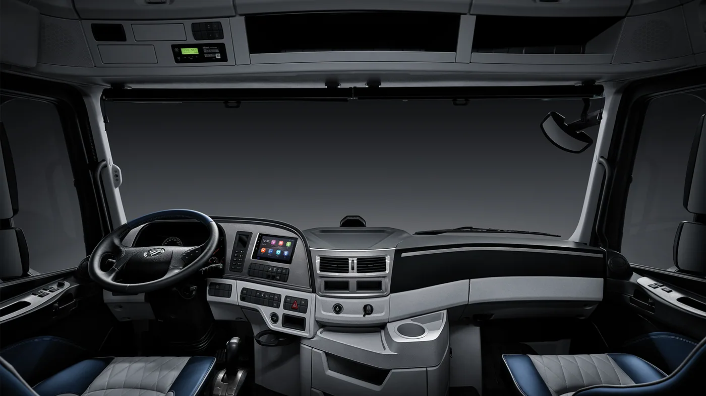

El balance argentino de agosto de 2026 trae un cambio en la primera posición por modelo. Según las cifras de ACARA reproducidas por Camiones y Buses el 2 de septiembre, se patentaron 1.549 vehículos pesados. El Foton Auman encabezó la tabla con 100 unidades, delante del Mercedes-Benz Atego 1732, con 96, y del Iveco Stralis, con 73.
El total de pesados cayó 25,6% interanual y el acumulado enero-agosto llegó a 14.108 unidades, 8,5% por debajo de 2025. Mercedes-Benz conservó el primer lugar entre las marcas, con 477 patentamientos. Es importante distinguir el universo de comerciales pesados del de camiones exclusivamente y no interpretar un liderazgo por modelo como liderazgo por marca.
La comparación mensual publicada utiliza 1.658 unidades para julio y arroja una baja de 6,6%. Esa base difiere de las 1.633 del primer balance de julio tratado anteriormente en este blog: para esta comparación se toma la base informada en la publicación de septiembre.
Qué cuenta un patentamiento y qué no cuenta
Análisis de Zabala Repuestos. El registro mensual permite observar qué vehículos se incorporan formalmente al mercado. No informa por sí solo cuántos kilómetros recorren, cuánto cuestan por viaje o qué experiencia tienen sus propietarios. Tampoco revela si una unidad reemplaza otra, amplía una flota o queda temporalmente sin trabajo asignado.
Por eso, el ranking sirve como punto de partida para investigar, no como una recomendación automática. Para quien necesita un tractor de larga distancia, una unidad muy vendida puede merecer una consulta; la decisión final debe responder a la carga, el recorrido y el respaldo que necesita su empresa.
Una familia de camiones puede reunir versiones distintas
La denominación comercial de una gama no define una única configuración. La página argentina del Auman R describe alternativas de motor Cummins, distintos niveles de potencia y varias versiones. Esa información de producto es un antecedente para entender la familia; no identifica la composición exacta de las unidades patentadas durante agosto.
Antes de comparar presupuestos conviene pedir la ficha correspondiente al vehículo ofrecido. Configuración de ejes, transmisión, equipamiento, año y aplicación deben coincidir con la cotización. Dos unidades con un nombre parecido pueden requerir repuestos, servicios y organización operativa diferentes.

El costo de trabajar no termina en el precio del camión
Una comparación útil reúne adquisición, mantenimiento, combustible, neumáticos, cobertura de servicio y tiempo fuera de operación. La financiación debe analizarse con sus condiciones completas, pero tampoco conviene que una cuota atractiva oculte gastos que aparecerán una vez que la unidad empiece a viajar.
El transportista puede preparar una misma descripción del trabajo y entregarla a todos los proveedores consultados. Con un recorrido de referencia, carga habitual, kilometraje mensual y lugar de mantenimiento, las propuestas resultan más comparables. No hace falta adivinar el futuro: hace falta explicitar qué supuestos está utilizando cada presupuesto.
El respaldo se verifica con preguntas concretas
La presencia de una marca en un ranking no demuestra que una pieza determinada esté disponible cerca de la base. Conviene consultar dónde se atenderá el camión, cómo se solicita un turno y qué ocurre ante una inmovilización lejos del taller habitual.
También es útil separar mantenimiento programado de reparación imprevista. Un filtro puede estar disponible de inmediato mientras que un módulo específico requiere otro plazo. Pedir referencias por chasis y conocer el procedimiento de suministro ayuda a planificar sin asumir que toda una gama utiliza los mismos componentes.
Una lista breve antes de elegir
- Definir el trabajo que deberá cumplir la unidad, antes de elegir una marca.
- Comparar versiones equivalentes y conservar sus fichas técnicas.
- Solicitar el plan de mantenimiento correspondiente a esa aplicación.
- Consultar disponibilidad y plazos de piezas concretas.
- Registrar qué servicios y condiciones incluye cada oferta.
- Conversar con usuarios que realicen un trabajo comparable.
Qué seguir en los próximos meses
Una sola medición mensual no alcanza para establecer una tendencia duradera. Será interesante observar si el orden se sostiene, cómo evoluciona el acumulado y si cambian las necesidades de servicio de las flotas. La interpretación gana valor cuando se comparan períodos y categorías consistentes.
Para el lector argentino, la conclusión práctica es sencilla: conocer el mercado ayuda a ampliar las opciones, pero el mejor camión será el que pueda cumplir su trabajo con respaldo verificable. Las cifras orientan la búsqueda; la evaluación de la operación y del mantenimiento completa la decisión.